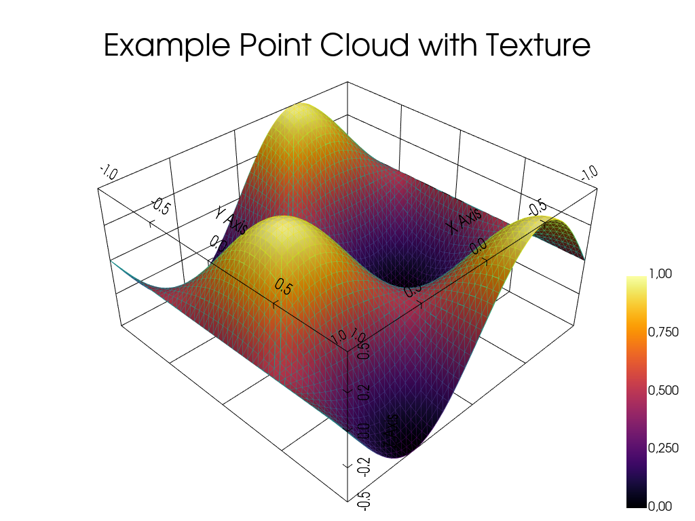

Note
Go to the end to download the full example code.
Simple mesh workflow#
This example demonstrates a simple workflow for creating, manipulating,
and visualizing a mesh using the pysdic library.
See also
pysdic.Mesh - Official documentation for the Mesh class.
Creating a Mesh#
To create a mesh, we first need to give the coordinates of the vertices and the connectivity.
Additionally some convenience methods are provided to save and load point clouds from files.
from pysdic import create_triangle_3_heightmap
import numpy as np
surface_mesh = create_triangle_3_heightmap(
height_function=lambda x, y: 0.5 * np.sin(np.pi * x) * np.cos(np.pi * y),
x_bounds=(-1.0, 1.0),
y_bounds=(-1.0, 1.0),
n_x=50,
n_y=50,
)
Add some point properties#
We can add properties to the vertices in the mesh. Here, we add a random scalar property to each point.
Each property can be multi-dimensional, e.g., a vector or tensor associated with each point. All the properties are stored in a dictionary-like structure with shape \((N_p, A)\).
heigth = surface_mesh.points[:, 2] # Get the height (z-coordinate) of each point
intensity = (heigth - heigth.min()) / (heigth.max() - heigth.min()) # Normalize height to [0, 1] for intensity
surface_mesh.vertices["intensity"] = intensity # Add intensity as a point property
Visualize the Mesh (Several options available)#
The point cloud can be visualized using the built-in visualization method with pyvista.
See also
pysdic.Mesh.visualize() - Official documentation for the visualize method.
surface_mesh.visualize(
face_color=None,
title="Example Point Cloud with Texture",
vertex_size=10,
bounds_grid="back",
property_cmap="inferno",
vertex_property="intensity",
show_vertices=False,
show_edges=True,
)

Total running time of the script: (0 minutes 0.343 seconds)